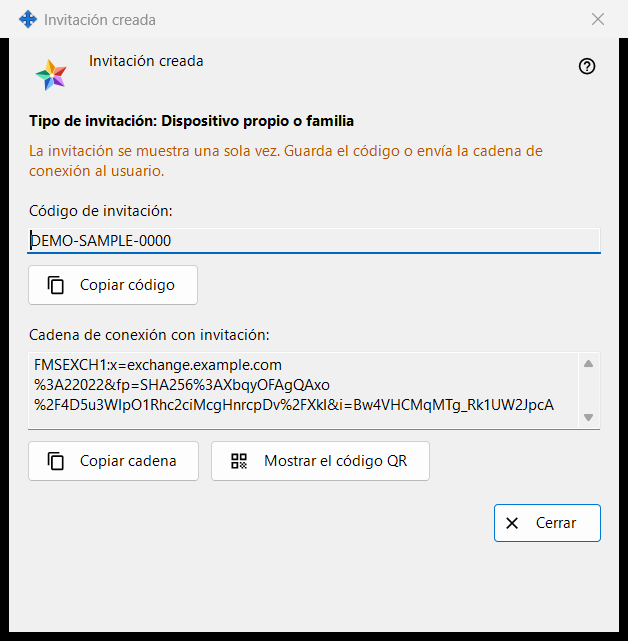
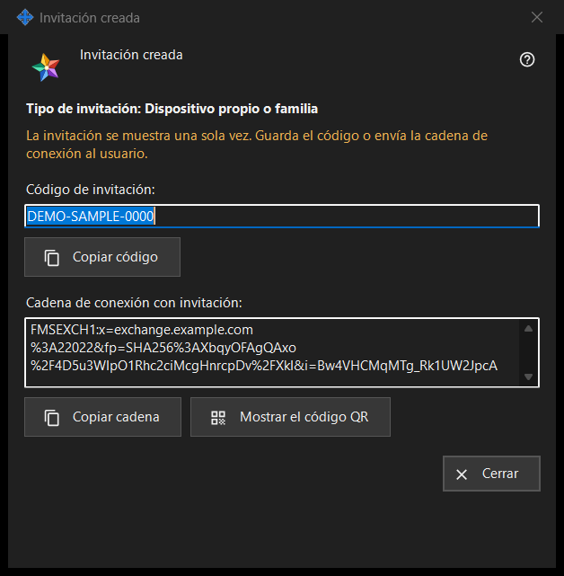

Invitación creada
Para qué sirve
Esta ventana muestra una invitación nueva una sola vez, justo después de «Crear» en la ventana «Crear invitación». Contiene el código de un solo uso y, cuando el programa del servidor de intercambio puede crearla, una cadena de conexión que ya incluye el código.


En este orden
- Revisa la línea «Tipo de invitación: ..».
- Pulsa «Copiar código», o «Copiar cadena» para la cadena con la invitación, o «Mostrar el código QR».
- Entrega el resultado a la persona por un canal de confianza.
- Pulsa «Cerrar». El mismo código no se vuelve a mostrar.
Los elementos
Tipo y advertencia
La línea en negrita «Tipo de invitación: Dispositivo propio o familia» indica el tipo que elegiste. La línea en el color de advertencia dice «La invitación se muestra una sola vez. Guarda el código o envía la cadena de conexión al usuario.» Cuando la ventana se cierra, el código y la cadena se borran de ella. Si se pierde uno de los dos, revoca la invitación en la lista y crea una nueva.
Código de invitación
«Código de invitación:» muestra el código en un cuadro de solo lectura. «Copiar código» lo copia como secreto, sin pasar por el historial del portapapeles de Windows (Win+V) ni por el portapapeles en la nube, y la línea de debajo dice «Código de invitación copiado al portapapeles.» o «No se pudo copiar el código al portapapeles.»
Cadena de conexión con la invitación
«Cadena de conexión con invitación:» aparece solo cuando se pudo crear la cadena. Nombra el servidor y lleva el código, así que trátala como el código: «Copiar cadena» también la copia como secreto. No contiene la contraseña de tu cuenta.
Código QR
«Mostrar el código QR» abre una imagen de la cadena con la invitación. Cualquiera que la vea puede usar la invitación, así que enséñala solo a la persona a la que va dirigida. Si no se puede crear la imagen, la línea dice «El código QR no está disponible en este momento.»
Qué hace la otra persona
En la ventana de la cuenta de intercambio («Iniciar sesión..») la persona pega la cadena con «Pegar» o abre un archivo guardado. Una cadena que lleva una invitación cambia la ventana al registro: elige un usuario, escribe una contraseña dos veces y pulsa «Crear la cuenta». Una invitación incorrecta o ya usada, o un usuario que ya está en uso, se rechaza con un mensaje.
Cerrar
«Cerrar» termina la ventana y borra de ella el código y la cadena. Aquí no se guarda nada más.
Ajustes del gestor · Ajustes de uso compartido SFTP · Ajustes del servidor de intercambio